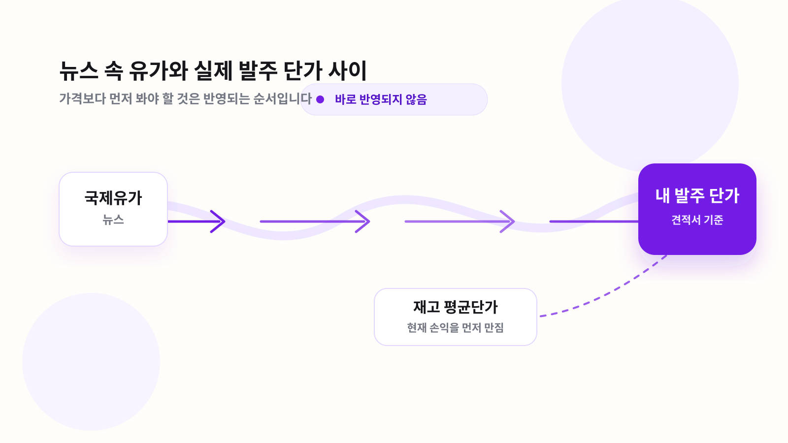

유가 하락 뉴스가 내 발주 단가까지 오기 전에 생기는 일
국제유가가 내렸는데도 다음 발주 단가가 그대로인 날이 있습니다. 이상한 일이 아닙니다. 사장님이 사는 건 WTI가 아니라, 이미 환율과 정제마진, 국내 공급가, 거래 조건을 지난 제품입니다.

하락 뉴스가 중요한 게 아니라, 그 하락이 다음 견적서에 들어올 만큼 충분히 내려왔는지가 중요합니다. 같은 국제유가 하락이라도 환율, 제품 마진, 공급가 고시 시점, 내 재고 상황에 따라 발주 판단은 달라집니다.
국제유가 뉴스는 주유소 운영에 필요한 선행 신호입니다. 하지만 곧바로 발주 단가가 되지는 않습니다. 원유 가격이 제품 가격으로 바뀌고, 원화로 환산되고, 국내 공급가와 거래처 조건을 거친 뒤에야 사장님 견적서에 들어옵니다.
그래서 하락장에서는 질문을 바꿔야 합니다. “유가가 내렸으니 지금 싸게 살 수 있나?”보다 먼저 봐야 할 질문은 이것입니다. 이번 하락이 내 다음 발주 단가까지 내려올 하락인가, 아니면 뉴스에서만 보이는 하락인가.
뉴스 속 유가는 원유, 발주 단가는 제품입니다
뉴스에서 자주 보는 유가는 원유 가격입니다. 주유소가 실제로 사는 것은 휘발유와 경유입니다. 둘 사이에는 정제 과정과 제품별 수급이 있습니다. 원유가 내려도 경유 수급이 타이트하면 경유 단가는 덜 내려올 수 있고, 환율이 오르면 원유 하락분이 원화 기준에서 줄어들 수 있습니다.
| 단계 | 사장님이 봐야 할 것 | 흔한 착각 |
|---|---|---|
| 국제유가 | 원유 방향과 변동 폭 | 원유 하락을 제품 하락으로 바로 읽음 |
| 환율 | 원화 기준 원가가 같이 내려오는지 | 달러 가격만 보고 체감 원가를 판단함 |
| 정제마진 | 휘발유와 경유가 따로 움직이는지 | 모든 유종이 같은 속도로 내려온다고 봄 |
| 국내 공급가 | 고시와 실제 적용 시점 | 뉴스 당일 바로 견적에 반영된다고 봄 |
| 재고 평균단가 | 현재 팔고 있는 재고의 원가 | 새 단가만 보고 오늘 마진을 계산함 |
하락 뉴스가 내 단가까지 안 내려오는 경우
첫째, 환율이 하락분을 지울 수 있습니다. 국제유가가 달러 기준으로 내려도 원화가 약하면 국내 체감 원가는 덜 내려옵니다.
둘째, 원유와 제품은 다르게 움직입니다. 특히 경유는 산업 수요, 계절 수요, 재고 수준에 따라 휘발유와 다른 가격 흐름을 보일 수 있습니다.
셋째, 공급가에는 적용 시차가 있습니다. 오늘 뉴스가 내일 견적서에 그대로 찍히지 않습니다. 거래처마다 반영 방식도 다릅니다.
넷째, 기존 재고가 손익을 먼저 만집니다. 새 단가가 내려와도 비싼 재고를 들고 있으면 당장 체감 마진은 달라지지 않습니다.
같은 하락장에서도 재고에 따라 판단이 갈립니다
발주 판단은 유가 방향보다 재고 위치가 먼저입니다
오를 때는 빠르고 내릴 때는 느리게 느껴지는 이유
주유소 사장님들이 체감하는 가격은 시장 가격 하나로 결정되지 않습니다. 공급가, 거래 조건, 주변 판가, 재고 평균단가가 함께 움직입니다. 오를 때는 손실 회피 때문에 시장이 빨리 반응하고, 내릴 때는 비싼 재고를 들고 있는 사업자가 많아 속도가 느려집니다.
그래서 하락장에서 필요한 건 예측이 아닙니다. 순서 확인입니다. 국제유가가 내려갔는지, 환율이 같이 도와주는지, 국내 공급가에 들어왔는지, 내 거래처 견적에 반영됐는지, 내 재고 평균단가와 맞는지를 차례로 봐야 합니다.
이번 주에는 가격보다 순서를 보세요
- 국제유가 하락 폭이 하루짜리인지, 며칠 이어지는 흐름인지 봅니다.
- 환율이 하락분을 살려주는지, 지우고 있는지 봅니다.
- 휘발유와 경유가 같은 방향인지 따로 움직이는지 봅니다.
- 다음 발주 전, 같은 조건의 견적을 두 개 이상 놓고 봅니다.
- 새 단가보다 내 재고 평균단가가 오늘 마진에 더 큰 영향을 주는지 확인합니다.
뉴스가 아니라 내 발주 조건까지 내려왔는지 확인하세요
오일딜러에서는 같은 조건의 주문과 견적을 비교해 볼 수 있습니다. 국제유가가 아니라 실제 발주 조건 기준으로 판단하세요.
무료 견적 비교하기참고 자료
- 1오피넷
국내 석유제품 가격과 주유소 가격 확인 자료.
- 2페트로넷
국내외 석유 시장 통계와 제품 가격 흐름 참고.
- 3U.S. Energy Information Administration
국제 원유·제품 시장 흐름 확인 자료.
자주 묻는 질문
국제유가가 내리면 국내 주유소 가격도 바로 내려가나요?
바로 내려간다고 보기는 어렵습니다. 환율, 제품 가격, 국내 공급가, 재고 평균단가를 거치면서 시차가 생깁니다.
하락장에서 발주를 늦추는 게 항상 유리한가요?
아닙니다. 재고가 부족하면 판매 기회를 놓칠 수 있고, 하락이 견적에 반영되지 않은 상태라면 기다린 효과가 작을 수 있습니다.
휘발유와 경유는 왜 다르게 움직이나요?
제품별 수급이 다르기 때문입니다. 원유 방향은 같아도 정제마진과 제품 수요에 따라 유종별 가격 반영 속도가 달라질 수 있습니다.